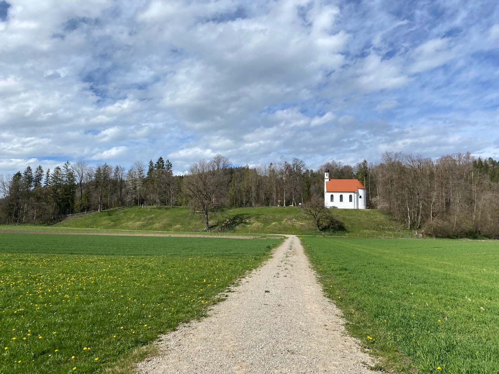
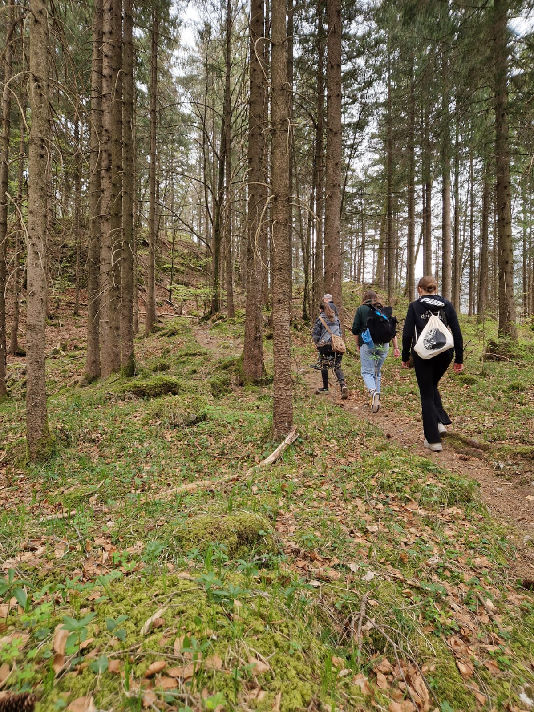
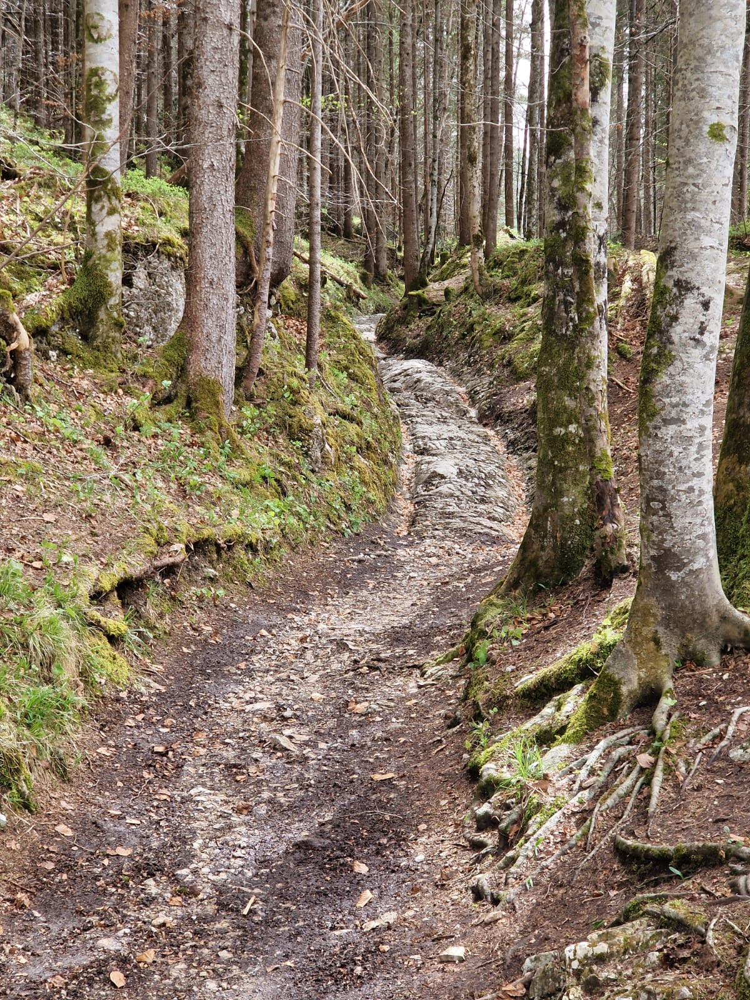
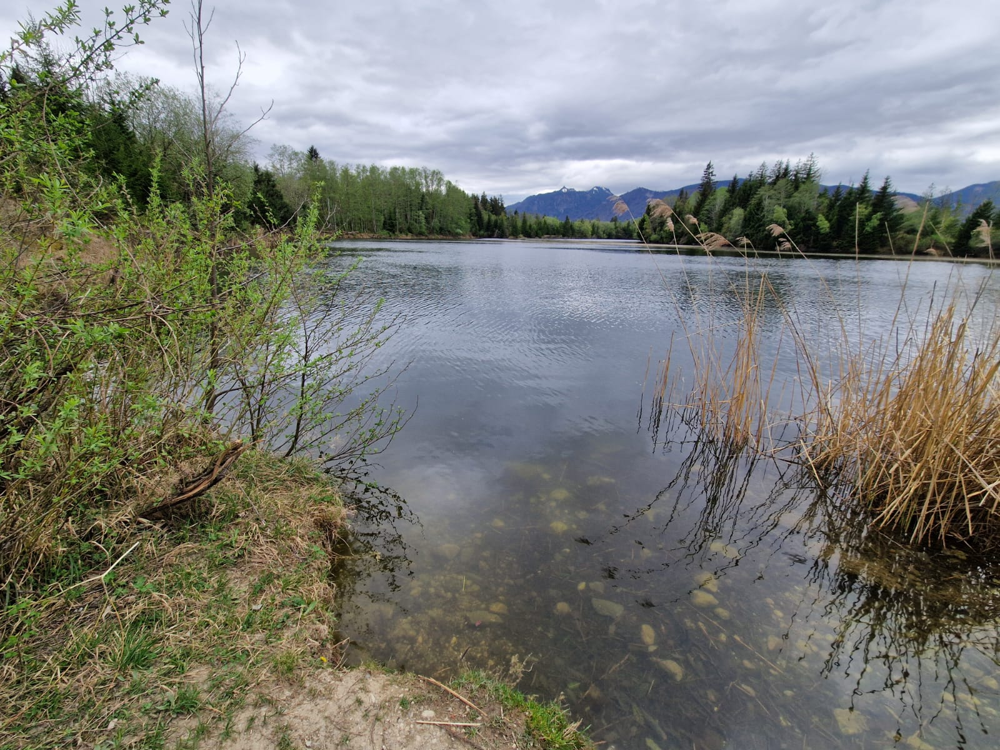
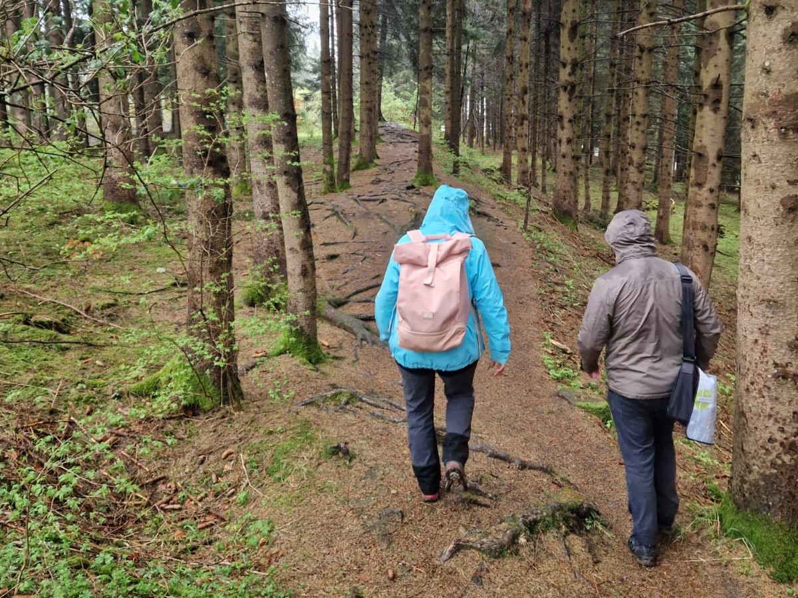
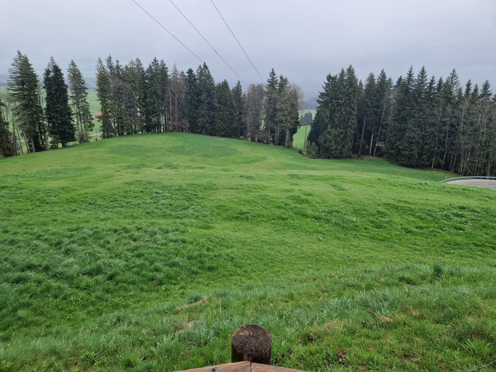
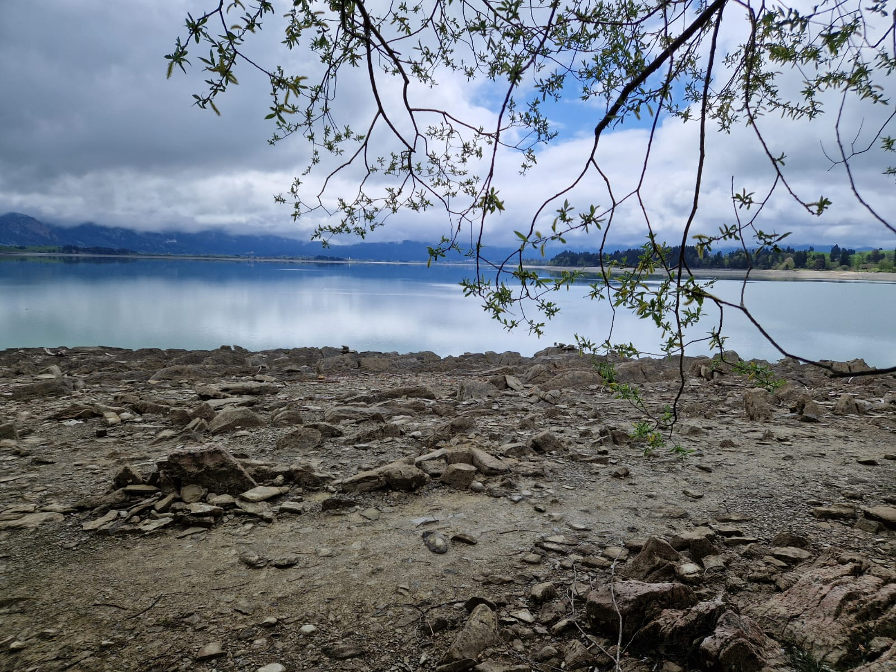
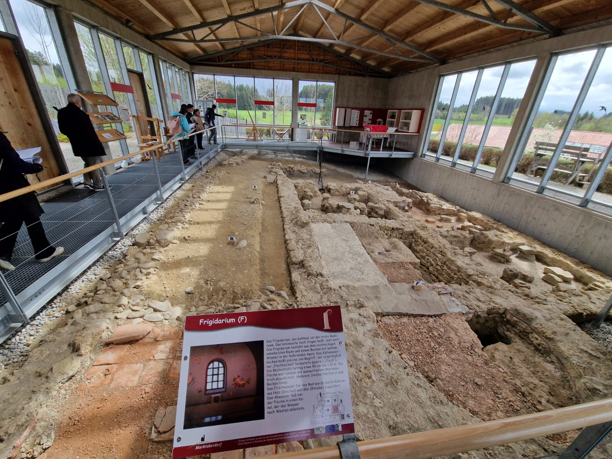
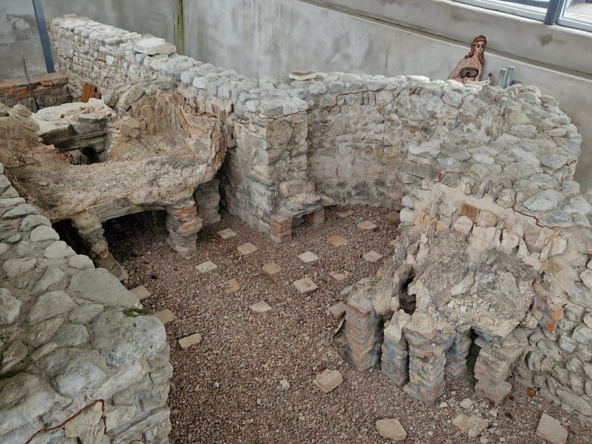

Im Zeitraum vom 08. bis 11. April 2024 führte die Professur der Archäologie der Römischen Provinzen der Otto-Friedrich-Universität Bamberg unter Leitung von Herrn Dr. Marcus Zagermann eine Exkursion zum Thema „Römische Fundplätze im raetischen Alpenvorland zwischen Forggensee und Kochelsee“ durch. Der folgende Bericht soll nun einen kurzen Überblick über die besuchten Orte und die errungenen Erkenntnisse zu eben diesen darstellen.
Exkursionsablauf
Datum
Standort
Kurzbeschreibung
08.04.2024
Epfach
Lorenzberg (einst römischer Besatzungsplatz) mit nahgelegenem Vicus Abodiacum.
09.04.2024
Oberammergau
Döttenbichl: Vermutlich Kampfhandlungsort in Verbindung des Alpenfeldzuges.
09.04.2024
Klais
Römische Straße mit Wagenspuren (Geleisestraße).
09.04.2024
Murnauer Moos
Ursprünglich Moosberg mit römischen Strukturen heute nur noch ein See.
10.04.2024
Nähe Bernbeuren
Römische Siedlung auf dem Auerberg mit Wallanlage.
10.04.2024
Forggensee
Brandopferplatz an dem zahlreiche Funde entdeckt wurden.
10.04.2024
Kohlhunden
Überreste des Badegebäudes der römsichen Villa.
10.04.2024
Tegelberg-Seilbahn von Schwangau
Überreste des Badegebäudes der Villa mit ursprünglich herausragender Wandmalerei.
Überblickskarte der besuchten Standorte
Für die Standortinfo bitte auf den jeweiligen Marker klicken!
Die Exkursion im Detail
Am Montag, den 08. April 2024 ging es morgens um 8.00 Uhr von Bamberg aus Richtung bayerisches Alpenvorland. Um die Mittagszeit erreichten wir unseren ersten Stopp - den Lorenzberg - der etwas außerhalb des Ortes Epfach liegt. Der Lorenzberg, bei dem es sich eher um einen kleinen Hügel handelt als um einen eigentlichen Berg, wurde schon 14. v. Chr. unter dem damaligen Alpenfeldzug besetzt. Aufgegeben wurde der Standort erst Ende des 4. Jh., heute steht auf dem Hügel die St. Lorenz-Kapelle. Reste aus der römischen Zeit sind auf dem Lorenzberg selbst nicht obertätig zu erkennen. Unweit entfernt befand sich der vicus Abodiacum, von welchem heute noch Reste eines Nymphäums anzutreffen sind. Außerdem befindet sich unweit davon ein kleines Ein-Raum-Museum über die Geschichte des Lorenzberges.

Blick auf den Lorenzberg

Auf dem Rundweg über den Döttenbichl
Am Dienstagmorgen ging es los zur Besichtigung des Döttenbichls, welcher zur Gemeinde Oberammergau gehört und an einer Engstelle zwischen den Bergen Kofel und Laber im Ammertal liegt. Wir parkten auf dem nahegelegenen Wanderparkplatz und gingen von dort aus über einen kurzen Waldweg zum Fuße des Hügels hin. Der Startpunkt des Rundweges über den Döttenbichl markiert eine überdimensional große künstlerische Holznachbildung des 1901 auf dem Hügel gefundenen silberverzierten Dolches. Der Döttenbichl an sich ist stark bewaldet, durch den Wanderweg aber gut für Besucher zugänglich. Die Erforschung erfolgte bedingt durch die örtlichen Gegebenheiten hauptsächlich durch Detektorarbeiten und das Freilegen kleinerer Ausgrabungsflächen. Bis dato wurden dabei jedoch noch keine antiken Befunde erschlossen, das Fundspektrum ist hingegen sehr reich. Es handelt sich dabei um sowohl ziviles als auch militärisches Fundmaterial, welches aber nur in geringem Maße in situ geborgen wurde. Vermutet wird, dass es in Verbindung des Alpenfeldzuges auf dem Döttenbichl zu Kampfhandlungen kam. Anschließend fuhren wir weiter zum Museum Oberammergau, in welchem sich eine kleine Ausstellung mit der römischen Geschichte des Ortes befasst und einige Kopien und Originale der Funde des Döttenbichls zeigt.

Startpunkt des Weges entlang der Geleisestraße
Nach einer kurzen Mittagspause fuhren wir weiter nach Klais. Dort besichtigten wir die sogenannte Geleisestraße, eine römische Straße, die im Wald nahe der Ortschaft liegt und recht schmal ist. Vor allem die im Fels ersichtlichen (eingetieften) Wagenspuren waren hervorragend zu erkennen.
In den Fels eingetiefte Wagenspuren
Weiter ging es dann zum Murnauer Moos, wo wir zunächst den Fundort der Eschenloher Straße besichtigen wollten. Doch leider gelangten wir nicht zu diesem Standort, da das Gebiet weitläufig aufgrund von Wiesenbrütern für Besucherverkehr gesperrt war. Unweit entfernt konnten wir jedoch zumindest zum Moosberg. Von besonderer Bedeutung an diesem Fundplatz ist, dass der Moosberg an sich nicht mehr existiert. Im 20. Jh. wurde der Berg industriell zur Gewinnung von Glaukontiquarz abgebaut, sodass das heutige Niveau sogar niedriger als das Murnauer Moos selbst liegt. Zu sehen ist heute nur ein See, der jetzt anstelle des Moosberges zu finden ist. Vor seiner Zerstörung konnte jedoch zumindest ein Teil des Berges archäologisch erforscht werden. Die Befundsituation war ursprünglich sehr gut, so waren noch ganze Mauern erhalten und auch einige Funde konnten geborgen werden. Durch die gänzliche Zerstörung ohne weitgehende Aufnahme der archäologischen Strukturen werden aber einige Forschungsfragen, die die Besiedelung des Moosberges betreffen, wohl nie geklärt werden.

See oberhalb des einstigen Moosberges
Am Mittwochmorgen ging es zunächst zum Auerberg, welcher zum größten Teil zur Gemeinde Bernbeuren gehört und ein 1055m hohes Bergmassiv ist. Ich selbst hatte die Führung inne und ging mit der Gruppe die beiden „Römer-Rundwege“ entlang. Zuerst den nördlichen Rundweg, dieser startet am Ostplateau des Auerberges, auf dem zwei Gebäude gefunden wurden. Beide gehören wohl zu einer militärischen fabrica. Von dort aus ging es dann zum Westplateau, auf dem mehrere Streifenhäuser und Wirtschaftsgebäude gefunden wurden. Obertätig waren die Strukturen bei der Führung nicht sichtbar, da die Grabungsschnitte alle am Ende der Ausgrabungen wieder zugeschüttet wurden. Zu sehen waren jedoch die Terrassierung des Geländes und teilweise schemenhaft auch der Wall, der die Siedlung umgab. Der zweite Rundweg des Auerberges führte nun konkreter am Wall vorbei. Am Ende der Führung gingen wir noch hoch auf die Aussichtsplattform der St. Georg Kirche, die den Auerberg bekrönt. Durch das mäßige Wetter wurde uns leider ein Weitblick verwehrt, durch den Nebel konnten wir nur etwa 200 m. weit sehen, was uns aber zumindest einen Überblick über das Gelände des Auerberges ermöglichte. Anschließend ging es zum Auerberg-Museum in Bernbeuren, in dem es neben ausgewählten Fundstücken auch eine filmische Visualisierung des Standortes gab.

Leicht im Gelände erkennbarer Wall mit Graben

Blick auf das Ostplateau mit sichtbarer Terrassierung
Als nächsten Ort besuchten wir den Forggensee. Zunächst fuhren wir zur südlichen Seite des Sees, wechselten aber nach kurzer Orientierung noch einmal den Standort, näher zum Fundplatz hin. Den Brandopferplatz, konnten wir leider jedoch nicht verorten. Das Besondere an diesem Standort ist aber vor allem die hohe Anzahl an Funden, die bei der Erforschung geborgen wurden.

Nahe des Standortes des Brandopferplatzes am Forggensee
Als nächsten fuhren wir die Villa Kohlhunden an, welche 2002 zufällig beim Bau der Umgehungsstraße entdeckt wurde. Das Badegebäude der Villa wurde im Anschluss an die Rettungsgrabungen dann mit einem Schutzbau umbaut bzw. überdacht, weswegen wir dieses bestaunen konnten. Anschließend ging es von dort weiter zum letzten Fundplatz des Geländeseminars, der Villa Schwangau, die ganz in der Nähe des Schlosses Neuschwanstein liegt. Berühmt ist diese Villa für ihre dort im Badegebäude gefundenen Wandmalereien, die vor Ort heute jedoch nur als Bilder zu sehen sind. Der Schutzbau, über den noch sehr gut erhaltenen Strukturen befindet sich unmittelbar bei der Tegelberg-Seilbahn von Schwangau und erscheint mit seiner kleinen Größe und dem Bau aus Beton und Glas recht unscheinbar. Neben dem Bad konnten wir uns auch unweit entfernt die Darre der Villa ansehen. Die originalen Strukturen wurde dort mit Beton und großen Steinen aufgemauert, da der Beton aber bereits an einigen Stellen zerfiel, liegen Teile des Originals nun gänzlich ungeschützt frei. Insgesamt schien das ganze präsentierte Villengelände eher mäßig aufbereitet und geschützt, was aber nur eine subjektive Meinung meiner selbst dazu darstellt. Am Donnerstagmorgen ging es auf direktem Wege zurück nach Bamberg, wo wir um etwa 14 Uhr voller neu gewonnener Eindrücke ankamen.

Erhaltene (teilweise restaurierte) Strukturen des Badegebäudes innerhalb des Schutzbaus

Erhaltene Strukturen des Bades der Villa innerhalb des Schutzbaus
Weitere Informationen gibt es hier (externe Seiten):